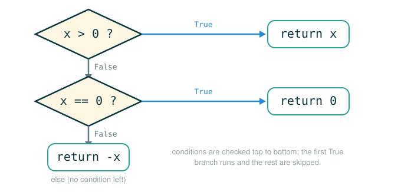

1.5 Control: Statements, Assignment, Conditionals, and Boolean Contexts
Up to now your programs have mostly been single expressions: you hand Python a calculation, it works out one value, and it shows you that value. This lesson is where programs grow a spine. By the end you will be able to do five things: tell a statement apart from an expression and say why a statement has no value, read a compound statement by finding its header, colon, and indented suite, create a named local value inside a function with an assignment statement, write an if/elif/else chain and predict exactly which branch runs, and explain why and and or sometimes never look at their right-hand side.
The thread that ties all of this together is a single new idea: control. A program is no longer just a value to compute. It is a sequence of steps, and some of those steps decide which later steps are allowed to run at all.
Control Means Choosing the Path
Picture following a recipe. Most of the time you do one step, then the next, then the next, straight down the card. But real recipes also branch. "If the dough is too sticky, add a tablespoon of flour; otherwise, move on." You read the condition, you check the dough, and based on the answer you either do the extra step or skip it entirely. You never do both.
That is exactly what control statements add to a program. So far the interpreter has walked straight down the page:
run line 1
run line 2
run line 3Control lets a program ask a question and then take one of several roads depending on the answer:
run line 1
ask a question
if the answer is true, run this suite
otherwise, skip it or run a different suiteA suite is a group of indented statements that some header line controls. The header asks the question; the suite is the work that runs only when the header says so. You can imagine the interpreter walking down a hallway of rooms, and a header is a guard standing at a doorway:
ordinary statement -> do it and keep walking
if header -> check the condition before entering this room
indented suite -> run these lines only if the header allows itThe colon and the indentation are not decoration. They are part of the machine's map: they tell Python exactly which lines belong to the same controlled block.
Statements Have No Value
This is the first real break from everything before. An expression computes a value; 2 + 2 produces 4. A statement does not produce a value at all. Instead Python executes a statement to change the state of the interpreter: it binds a name, defines a function, or returns from a call. You have already met three kinds of statement without dwelling on the distinction: assignment statements, def statements, and return statements. Each one contains expressions as parts, but the statement itself is not an expression and has no value.
The flip side is also true and worth saying out loud, because it causes a classic beginner bug: an expression can sit on a line all by itself as a statement. When it does, Python evaluates it and then throws the value away. That is fine when the expression does something useful as a side effect, like calling print. It is a quiet disaster when you meant to keep the value.
Here is the original cautionary example. Suppose you want a square function but you forget the word return:
# (1)
>>> def square(x):
mul(x, x) # Watch out! This call doesn't return a value.
This is valid Python, but almost certainly not what you wanted. The body is a single expression, mul(x, x). An expression on its own is a legal statement, so Python accepts it. But the effect is only that mul is called and its result is immediately discarded. The function never sends a value back, so calling square(3) produces nothing useful. The fix is to make the body a return statement so the value actually leaves the function:
# (2)
>>> def square(x):
return mul(x, x)
There is a legitimate time to use a bare function call as a statement: when you call a non-pure function for its side effect rather than its value. Printing is the standard case, because print does its job by drawing text on the screen, not by returning something you keep:
# (3)
>>> def print_square(x):
print(square(x))
The rule to carry forward: if you want a value out of a function, the body needs return. A bare expression statement runs and then vanishes.
Following the line: an expression statement vs. a return statement
mul(x, x)
├─ mul ......... the multiplication function
├─ (x, x) ...... call it on x and x
├─ (statement) . evaluated, then the result is thrown away
└─ does ........ computes x * x and discards it (function returns nothing)return mul(x, x)
├─ return ...... hand a value back to the caller and stop the function
├─ mul(x, x) ... compute x * x first
└─ does ........ sends the value x * x back as the call's resultStatements Execute in Order
A multi-line program is a sequence of statements, and the default behavior is the simplest possible: do the first one, then the next, and so on. The original text states the rule precisely: to execute a sequence of statements, execute the first statement; if that statement does not redirect control, then proceed to execute the rest of the sequence.
# (4)
x = 2
y = x + 3
z = y * 10
Walking through it one statement at a time:
x = 2 -> bind x to 2
y = x + 3 -> look up x, compute 5, bind y to 5
z = y * 10 -> look up y, compute 50, bind z to 50After all three run, the global frame holds:
x -> 2
y -> 5
z -> 50Later statements can lean on earlier ones because each assignment leaves a binding behind in the environment. The phrase "if that statement does not redirect control" is a hint of what is coming: some statements, like return, or a chosen if branch, change which statement runs next instead of simply falling through to the line below.
Compound Statements: Header, Colon, Suite
Python sorts statements into two shapes. A simple statement is a single line that does not end in a colon, like x = 2 or return x. A compound statement is built out of other statements, so it spans several lines. It starts with a one-line header that ends in a colon and announces what kind of statement it is, followed by an indented suite of statements that the header controls. A header together with its suite is called a clause. A single compound statement can have several clauses stacked on top of each other.
The general shape looks like this:
<header>:
<statement>
<statement>
...
<separating header>:
<statement>
<statement>
...
...Following the line: the parts of a clause
<header>:
<statement>
├─ <header> .... the line that announces the clause (e.g. an if or def line)
├─ : ........... ends the header and promises an indented suite below
├─ indent ...... marks which lines belong to this header
└─ <statement> . a member of the suite, run under the header's controlThe colon and the indentation together are how Python knows where a controlled block begins and ends. Miss the colon and Python cannot tell a suite is coming; misalign the indentation and a line silently lands in the wrong block.
Local Assignment Inside a Function
Assignment statements are not only for the top level of your program. They also work inside a function body, and that is where they earn their keep: a local assignment gives a name to an intermediate result so the calculation reads clearly. Whenever a user-defined function is applied, the suite of its definition runs in a local environment that begins with a fresh local frame created by that call. The effect of an assignment statement is to bind a name to a value in the first frame of the current environment — that is, the most local frame, the one this call just created — so inside a function that binding lands in the call's local frame, not the global one.
Here is the original example. It computes the percent difference between two numbers, using a local name difference to hold an intermediate quantity:
# (5)
def percent_difference(x, y):
difference = abs(x-y)
return 100 * difference / x
result = percent_difference(40, 50)
When percent_difference(40, 50) is called, Python builds a local frame for the call:
Local frame for percent_difference
x -> 40
y -> 50Then it executes the body in order. The assignment runs first and adds a third binding to that same local frame:
difference = abs(x-y)
= abs(40 - 50)
= abs(-10)
= 10
Local frame for percent_difference
x -> 40
y -> 50
difference -> 10Then the return statement uses all three local names to compute the result:
return 100 * difference / x
= 100 * 10 / 40
= 25.0So the global binding left behind is:
result -> 25.0The local name difference is a convenience, not a requirement. It exists only to make the calculation readable. The same function can be written as a single expression with no local assignment at all:
# (6)
>>> def percent_difference(x, y):
return 100 * abs(x-y) / x
>>> percent_difference(40, 50)
25.0
Both versions return the same value. Version (5) hands the reader a named intermediate quantity; version (6) is shorter. Choosing between them is a judgment call about clarity, and naming a meaningful intermediate is often worth the extra line.
Conditional Statements
Now the main event. A conditional statement is how a program asks a question and runs different code depending on the answer. The classic example reimplements something Python already gives you, the absolute value of a number, so you can see the control flow without any mystery in the math.
Python already has a built-in abs function, and the quickest way to see what we are about to rebuild is to call it at the prompt:
# (7)
>>> abs(-2)
2
The built-in takes -2 and hands back 2: it strips off the sign and keeps the magnitude. Our job now is to reimplement that behavior ourselves as absolute_value, so the control flow is fully visible instead of hidden inside a built-in.
Here is the official implementation, verbatim:
# (8)
def absolute_value(x):
"""Compute abs(x)."""
if x > 0:
return x
elif x == 0:
return 0
else:
return -x
result = absolute_value(-2)
In plain English the function asks a chain of questions:
Is x greater than 0?
If yes, return x.
If no, is x equal to 0?
If yes, return 0.
If no, return -x.The key is that Python does not gather up every true clause. It checks the clauses in order and stops at the first one whose condition is a true value. The original text gives the exact procedure: evaluate the header's expression; if it is a true value, execute that suite and then skip over all subsequent clauses in the conditional statement.
Tracing absolute_value(-2)
Start with the local frame for the call:
Local frame for absolute_value
x -> -2Now walk the clauses in order:
Check x > 0:
-2 > 0 is False
skip the first suite
Check x == 0:
-2 == 0 is False
skip the second suite
else:
no condition left to check, so run this suite
return -x, which is -(-2) = 2So the global binding is:
result -> 2Think of the chain as a row of guarded doors. Python tries them strictly left to right and walks through the first one that opens:
Door 1: x > 0
Door 2: x == 0
Door 3: elseFor x = -2 the first two doors stay shut, so Python uses the else door. The instant a door opens, every later door in the chain is skipped. That is why the order of conditions can change what a program does.
Here is the same flow as a picture: each condition is a diamond, a True answer turns aside to run a branch, and a False answer drops down to the next question, with the else at the bottom catching the leftover case.

The Anatomy of if, elif, and else
The general form, exactly as the original text presents it:
if <expression>:
<suite>
elif <expression>:
<suite>
else:
<suite>Following the line: the if statement keywords
if <expression>:
<suite>
elif <expression>:
<suite>
else:
<suite>
├─ if .......... begins the required first condition
├─ elif ........ checked only if every condition above it was false
├─ else ........ runs only if no condition above it was true
├─ <expression> a header condition, evaluated in a boolean context
├─ : ........... ends each header and announces its suite
└─ runs ........ exactly one suite in the whole chain, or none if all are false and there is no elseA few rules fall out of this shape. Exactly one suite runs, never two. The if clause is required and comes first. You may have any number of elif clauses, including none. The else clause is optional, has no condition, and catches the leftover case. If every condition is false and there is no else, then no suite runs at all.
Boolean Contexts
The expression after if or elif lives in a special situation the original text calls a boolean context: its truth value is what matters to control flow, but its value is not assigned or returned anywhere. Python only asks, "does this count as true or false?"
So the condition does not have to literally be True or False. Python includes several false values: 0, None, and the boolean value False. All other numbers are true values, and most other objects count as true as well.
False
0
NoneBecause of this, a plain number can act as a condition:
# (9)
if 3:
result = "three counts as true"
else:
result = "this does not run"
The value 3 is not the boolean True, but in a boolean context it counts as true, so the first suite runs.
For early Computer Science I work, lean toward explicit comparisons rather than relying on a value's truthiness. The condition if x > 0: shows the exact question on the page; if x: forces the reader to recall Python's truthiness rules:
# (10)
if x > 0:
return x
The difference is about readability, not correctness:
if x > 0: reader sees the exact question
if x: reader must remember Python's truthiness ruleWhen you are learning, prefer the version that makes the question visible.
Comparison Operators
Comparison expressions are where boolean values usually come from. Each one asks a yes-or-no question and produces True or False.
# (11)
>>> 4 < 2
False
# (12)
>>> 5 >= 5
True
5 >= 5 reads as "5 is greater than or equal to 5," and it is true because >= allows the two sides to be equal.
# (13)
>>> 0 == -0
True
The double-equals == tests whether two values are equal. Python deliberately keeps it separate from the single = of assignment, and confusing the two is one of the most common early mistakes:
= assignment: bind a name to a value
== comparison: ask whether two values are equalFollowing the line: assignment vs. equality
x == 0
├─ x ........... the value currently bound to x
├─ == .......... equality comparison (a question)
├─ 0 ........... the value to compare against
└─ evaluates to True if x equals 0, otherwise Falsex = 0
├─ x ........... the name being bound
├─ = ........... assignment (an action)
├─ 0 ........... the value to bind
└─ does ........ binds the name x to 0 (no value, this is a statement)Using = where a condition belongs is not just wrong in meaning; Python rejects it outright as a syntax error, because an assignment statement cannot serve as the condition of an if. The comparison you actually want is ==:
# (14)
if x == 0:
return 0
Boolean Operators
Python has three operators for combining and inverting truth values: and, or, and not.
# (15)
>>> True and False
False
# (16)
>>> True or False
True
# (17)
>>> not False
True
In words: and is true only when both sides count as true; or is true when at least one side counts as true; not flips a truth value to its opposite. These let you build compound conditions out of simple comparisons. The original text notes a naming convention you will meet later in Python's libraries: functions that perform comparisons and return boolean values are often named starting with is, as in isfinite or isdigit (you do not need these yet).
Short-Circuiting
There is a subtlety in how and and or actually evaluate, and it matters more than it first appears. Python does not always evaluate both sides. It evaluates the left side first, and if the left side already settles the outcome, Python returns a value without ever touching the right side. This is called short-circuiting.
The original text gives the precise procedures. For and:
To evaluate the expression <left> and <right>:
1. Evaluate the subexpression <left>.
2. If the result is a false value v, then the expression evaluates to v.
3. Otherwise, the expression evaluates to the value of the subexpression <right>.For or:
To evaluate the expression <left> or <right>:
1. Evaluate the subexpression <left>.
2. If the result is a true value v, then the expression evaluates to v.
3. Otherwise, the expression evaluates to the value of the subexpression <right>.And not, which never short-circuits because it has only one operand:
To evaluate the expression not <exp>:
Evaluate <exp>; the value is True if the result is a false value, and False otherwise.Read step 2 carefully in each case. The operator returns a value v, which is one of the operands themselves, not necessarily a literal True or False. For and, the moment the left side is false, that false value is the answer and the right side is skipped. For or, the moment the left side is true, that true value is the answer and the right side is skipped.
A bridge you can verify by hand
The procedures above are abstract, so here is a concrete consequence you can check yourself. Short-circuiting means the right side might contain something dangerous that simply never runs. Suppose x is 0 and you want to test a property of 10 / x only when dividing is safe:
# (18)
x = 0
x != 0 and 10 / x > 1
Python evaluates the left side first:
0 != 0 -> FalseBy the and rule, a false left side is the answer, so Python returns False and never evaluates 10 / x. Division by zero is avoided entirely, because Python already knew that one false side makes the whole and false. The right side could not rescue it, so there was no reason to run it.
The same effect shows up in the smallest possible form, with an undefined name on the right:
# (19)
False and unknown_name
This returns:
FalsePython never looks up unknown_name, because the false left side already determines the whole and. The or version is the mirror image:
# (20)
True or unknown_name
This returns:
TrueAgain unknown_name is never looked up, because the true left side already determines the whole or. The practical lesson is about order: put the cheap safety check on the left and the risky operation on the right, so the check runs first and the risky part runs only when it is safe. Written the other way around, with the division first, Python would attempt to divide by zero before it ever reached the guard.
These values, rules, and operators give us a way to combine the results of comparisons, which is exactly what richer conditions are built from.
⚠Common Beginner Traps
| Mistake | What Goes Wrong | Safer Question |
|---|---|---|
Writing a function body as a bare expression and forgetting return |
The value is computed and discarded; the function hands nothing back | Does this function need to return a value, and did I write return? |
| Treating a statement as if it produced a value | Statements have no value; trying to use one where a value belongs, like y = (x = 5), raises a SyntaxError |
Is this line carrying out an action or computing a value? |
Leaving out the colon after if, elif, else, or def |
Python cannot tell that an indented suite is coming and raises a SyntaxError |
Which header controls the next suite? |
| Misaligning the indentation of a suite | A line silently joins the wrong block | Is this line indented under the header I intended? |
Using = instead of == in a condition |
Assignment is an action; equality is a question, and = is a syntax error here |
Am I binding a name or asking whether two values are equal? |
| Expecting every true branch in a chain to run | Only the first true clause runs; the rest are skipped | Which condition is the first true one? |
| Forgetting short-circuit behavior | The right side of and or or may never be evaluated |
Does Python already know the result from the left side alone? |
| Putting a risky operation to the left of its safety check | The risky part runs before the guard can protect it | Is the cheap check on the left and the risky part on the right? |
✓Check Your Understanding
- Why does a statement have no value, and what happens if you put a bare expression like
mul(x, x)as a function body instead ofreturn mul(x, x)? - In a compound statement, what are the header, the colon, and the suite each responsible for?
- When you write
difference = abs(x-y)insidepercent_difference, which frame does the binding fordifferencego into? - In an
if/elif/elsechain, how many suites run, and what determines which one? - What is a boolean context, and which three values does Python treat as false?
- Using the short-circuit rules, what value does
0 or 5evaluate to, and what value does5 and 0evaluate to? - Given
x = 0, why doesx != 0 and 10 / x > 1returnFalseinstead of raising a division error?
Show the answers
- A statement is executed to change interpreter state, not to compute a value, so there is nothing to return; a bare expression body runs
mul(x, x), discards the result, and the function returns nothing useful, whereasreturn mul(x, x)actually hands the product back to the caller. - The header announces the clause and ends in a colon; the colon promises an indented suite is coming; the suite is the group of indented statements the header controls.
- It goes into the local frame created for that call to
percent_difference, because an assignment binds a name in the first frame of the current environment. - At most one suite runs: the suite of the first clause whose condition is a true value, or the
elsesuite if no condition is true. If all are false and there is noelse, none run. - A boolean context is a position, like an
iforelifcondition, where Python cares only about the truth value of an expression and does not assign or return it; the false values are0,None, andFalse. 0 or 5evaluates to5: the left side0is a false value, soordoes not stop there and the whole expression takes the value of the right side,5.5 and 0evaluates to0: the left side5is a true value, soanddoes not stop there and the whole expression takes the value of the right side,0. In each case the result is one of the operands themselves, not the literalTrueorFalse.- Python evaluates the left side
x != 0first, which is0 != 0, orFalse; by theandshort-circuit rule a false left side is the answer, so the right side10 / x > 1is never evaluated and the division by zero never happens.
§Summary
Control is the shift from computing a single value to executing a sequence of steps, some of which decide what runs next. A statement is executed to change interpreter state and has no value, unlike an expression; a bare expression used as a statement runs and then discards its result, which is why returning a value requires return. Compound statements group work using a header, a colon, and an indented suite, and a header plus its suite is a clause. Local assignment binds a name inside a call's own frame, letting you name intermediate results. Conditional statements use if/elif/else to run exactly one suite, chosen as the first clause whose condition is true in a boolean context, where 0, None, and False are the false values. Comparison operators produce booleans and must use ==, not =. The boolean operators and, or, and not combine truth values, and and and or short-circuit: they return a value from the left side whenever it already settles the outcome, which lets a cheap check on the left guard a risky operation on the right.
▶Step-Through Checkpoint
This block is the lesson's capstone: the official absolute_value, called three times. In an environment diagram each call opens its own local frame binding x to one argument, and you can watch which branch of the if/elif/else chain fires for 5, 0, and -2 before that frame closes and hands its result back to a, b, or c in the global frame. Before you step through it, write down three predictions: how many local frames open over the whole run, which return line runs in the call with argument 0, and what a and b are bound to when the last line finishes.
# (21)
def absolute_value(x):
"""Compute abs(x)."""
if x > 0:
return x
elif x == 0:
return 0
else:
return -x
a = absolute_value(5)
b = absolute_value(0)
c = absolute_value(-2)
Step through it one line at a time and check each prediction as the frames appear. Argument 5 passes x > 0 and returns 5; argument 0 fails that test but passes x == 0, so the elif suite returns 0; argument -2 falls through to else and returns 2. Three local frames open, one per call: the same body runs each time, but the argument chooses which suite executes.